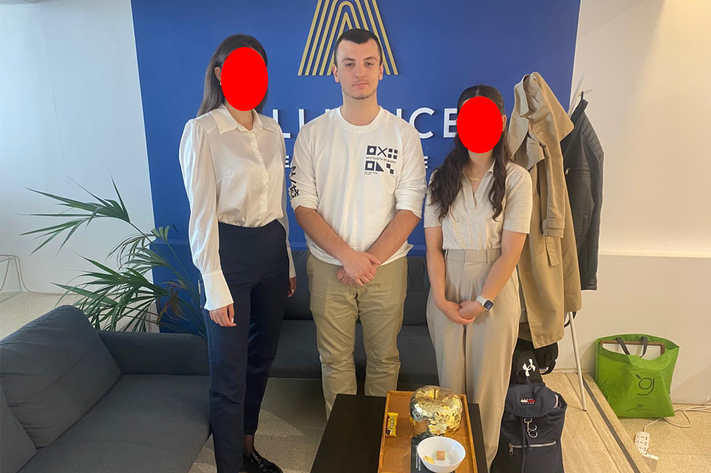

Project
Buitenlandse stage WICO
Dit project was een uitgebreid traject dat zich over meerdere fases verspreidde. Het begon met een voorbereidingsperiode van één maand, gevolgd door twee weken projectwerk en een maand reflectie. Tijdens de voorbereidende fase dienden wij een document in waarin we motiveerden waarom we een buitenlandse stage wilden volgen en welke leerdoelen we daarbij voor ogen hadden. De stage zou plaatsvinden in Malta en bestond uit een functie als receptionist. Gedurende de stage werkten we vijf dagen per week, telkens met een minimum van zeven uur per dag. Na afloop van de stage bereiden we een presentatie voor waarin we onze ervaringen en opgedane inzichten toelichten.
Geleerde technieken
- Socialmediaconcepten ontwikkelen voor Instagram, linkedIn en Tiktok
- Onderzoek doen naar verschillende marketingtechnieken
- Content bedenken die past bij een vastgoedbedrijf en zijn doelgroep
- Samenwerken met collega's en samen ideeën uitwerken
- Werken voor een baas in een internationale werkomgeving
Werkproces in Malta
- De eerste dagen leerde we Alliance Rel Estate en hun manier van werken beter kennen
- We onderzochten verschillende marketing-en socialmediastrategieën die interessantkonden zijn voor het bedrijf
- Met onze research bedachten we ideeën en concepten voor content op Tiktok, Instagram en LinkedIn
- Daarna werkten we onze concepten visueel uit in Canva en bouwden we verschillende socialmediaposts op
- Tot slot presenteerden we onze ontwerpen aan de werkgever, ontvingen we feedback en bekeken we wat er nog verbeterd kon worden
Persoonlijke ervaring
- Ik vond het interessant om voor het eerst binnen marketing en social media te werken
- De werksfeer in Malta voelde losser en flexibeler als in belgië
- Ik merkte dat zelfstandig werken belangrijk was, omdat onze baas vaak meetings had of onderweg was naar panden
- Daardoor hadden we minder contact met andere werknemers en moesten we zelf initiatief nemen
- De buitenlandse stage gaf mij een beter beeld van hoe het is om in een andere werkcultuur en voor een echte opdrachtgever te werken
Foto's uit Malta
